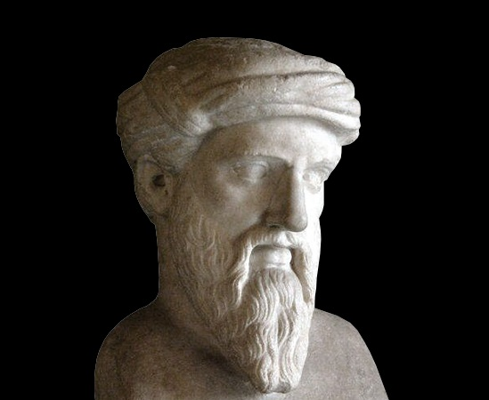

Papope MATHS
PITAGORAS
Nacimiento y fallecimiento
Pitágoras de Samos nació cerca del año 569A.C. en Samos y murió alrededor del 475A.C.
Breve descripción
Es descrito a menudo como el primer matemático puro. Para su descripción, los profesionales debieron basarse en las biografías escritas por otros autores, las cuales tenían como finalidad atribuirle poderes divinos. Entre sus profesores hubo 3 de gran influencia, siendo el principal Ferécides

Aportes
Enseñaba que la órbita lunar estaba inclinada hacia el ecuador de la tierra y reveló que los planetas conocidos como “Lucero del alba” y “Lucero de la tarde” eran los mismos (venus). Su ideología influenció a otros matemáticos. Quienes se basaban en la ideología de Pitágoras se los llamaban “pitagóricos” e hicieron descubrimientos como que la tierra rota alrededor de su propio eje.
FUENTES
Matem.unam
Ciencia Matematica
.png) Pitagoras
Pitagoras
Pitagoras
Pitagoras
.jpg) Euler
Euler
Euler
Euler
 Leandro Pisa
Leandro Pisa
Leandro Pisa
Leandro Pisa
 Calculadora
Calculadora
Calculadora
Calculadora